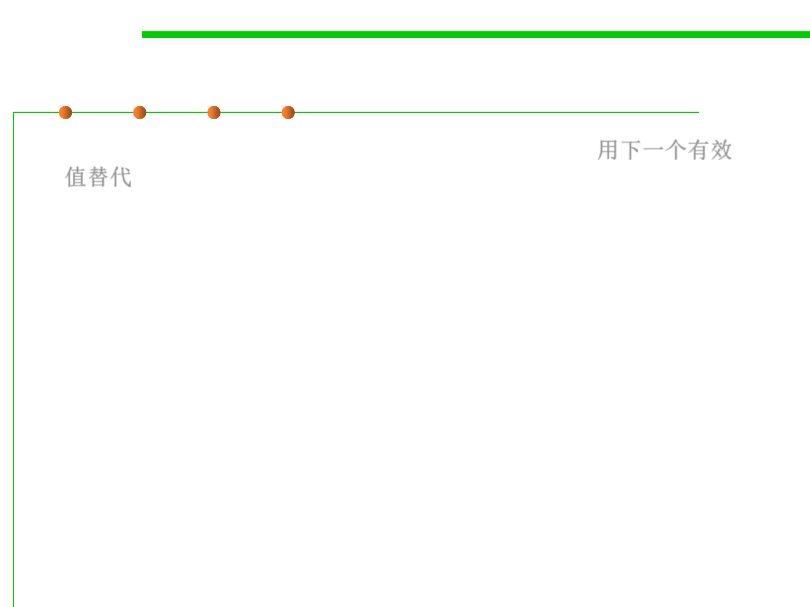

7.2 Error and Exception Handling
(2) Substitute the next piece of valid data
▪ Substitute the next piece of valid data (Robustness) 用下一个有效
值替代
– When processing a stream of data, some circumstances call for simply
returning the next valid data.
– E.g., If you’re reading records from a database and encounter a corrupted
record, you might simply continue reading until you find a valid record. If
you’re taking readings from a thermometer 100 times per second and you
don’t get a valid reading one time, you might simply wait another 1/100th
of a second and take the next reading.